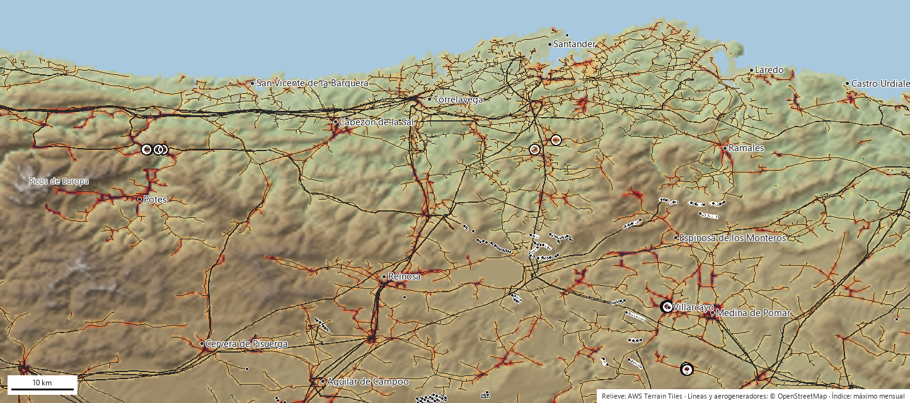
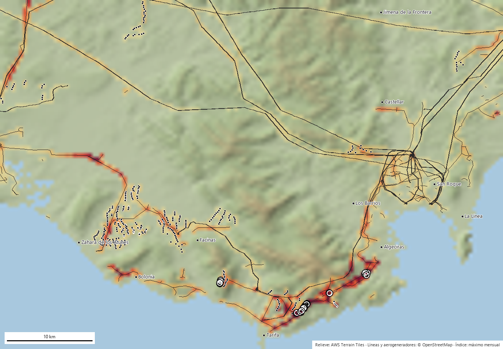

Cruzamos los tendidos eléctricos y aerogeneradores de OpenStreetMap con dónde y cuándo están las aves (citas de eBird y GBIF, seguimiento GPS de Movebank) y con el relieve, para producir un índice por celda de 500 m, especie y mes, y un ranking de los apoyos, tramos y aerogeneradores que más urge revisar. Se recalcula cada mes. Todo el código y los datos de salida son públicos.
Los tendidos de distribución electrocutan a las aves que se posan en sus apoyos; los conductores y las palas de los aerogeneradores las golpean en vuelo. Son las principales causas de mortalidad no natural de grandes rapaces y aves planeadoras en España.
El ave se posa en la cruceta y toca dos fases o fase y tierra. Depende del armado del apoyo, del tipo de aislador y de si hay derivaciones o seccionadores. Afecta a buitres, águilas, cigüeñas, milanos y búho real.
Aves de vuelo poco maniobrable o en bando, al amanecer y al anochecer: grullas, cigüeñas, espátulas, garzas, avutardas. Peor en laderas, collados y zonas de paso.
Planeadoras que usan las mismas corrientes ascendentes que justifican el parque: buitre leonado, alimoche, quebrantahuesos, águila real, milanos.
El Real Decreto 1432/2008 obliga a corregir las líneas peligrosas en zonas de protección, y hay estudios académicos excelentes para lugares y años concretos. Pero no existe un servicio, actualizado y consultable, que diga a una eléctrica, a una administración o a una ONG qué elementos concretos revisar primero, en qué mes y por qué especie. Las correcciones se deciden con inventarios antiguos, con la mortalidad que alguien encontró por casualidad, o tramo a tramo cuando llega la denuncia.
Un apoyo es peligroso si hay muchos apoyos peligrosos en el sitio, si allí hay aves sensibles y si están en la época en que lo usan. Cada uno de esos factores se puede estimar con datos abiertos y actualizar solo.
El índice es relativo a la región (el percentil 99 vale 100): ordena, no certifica mortalidad. Un apoyo con índice 300 no mata tres veces más que uno con 100; simplemente reúne más apoyos, más aves sensibles y más meses de presencia que el 99 % de las celdas.
La condición de diseño fue que cualquiera pudiera ejecutar el proyecto sin pedir permisos. Se cumple; la única capa que exige clave (eBird Status & Trends) está preparada pero aún no cargada.
| Fuente | Qué aporta | Volumen en los pilotos | Licencia |
|---|---|---|---|
| OpenStreetMap (Overpass) | Líneas con tensión y operador, apoyos y postes con sus etiquetas (material, aislador, derivaciones), aerogeneradores | Cantabria: 46 300 apoyos, 4 535 tramos, 463 turbinas Estrecho: 2 703 apoyos, 414 tramos, 516 turbinas | ODbL |
| GBIF, que integra el eBird Observation Dataset | Citas georreferenciadas por especie, mes y año desde 2010. Las citas de todas las aves miden el esfuerzo de observación | Cantabria: 1,35 M citas de aves (esfuerzo), 101 000 de 18 especies Estrecho: 165 000 citas de 16 especies | CC0 / CC BY / CC BY-NC según dataset |
| Movebank Data Repository | Trayectorias GPS publicadas con los artículos científicos: dónde vuelan de verdad los individuos marcados | Estrecho: 296 719 posiciones de milano negro, 64 567 de cigüeña blanca Cantabria: 5 posiciones (no hay datasets publicados de la zona) | CC0 |
| AWS Terrain Tiles (terrarium) | Elevación a 30 m → pendiente e índice de posición topográfica (crestas y collados) | Ambas regiones completas | Público |
| Bibliografía | Pesos de sensibilidad por especie y mecanismo (Bevanger 1998, Janss 2000, Lehman 2007, Marques 2014) y estatus del Catálogo Español de Especies Amenazadas | 21 especies | — |
Estrecho: buitre leonado, buitre negro, alimoche, águila imperial, perdicera, real, culebrera, calzada, abejero, milano negro y real, halcón peregrino, cigüeña blanca y negra, grulla y búho real. Cantabria cambia las mediterráneas por quebrantahuesos, chova piquirroja, espátula y garza real. Cada especie lleva un peso por mecanismo (0-1) y un peso de conservación, ajustables en un único fichero de configuración.
Todo ocurre sobre una malla de celdas de 0,005° (unos 450 × 550 m). Para cada especie s, mes m y celda se calculan tres índices:
electrocución[s,m] = P[s,m] · w_electro[s] · apoyos_equivalentes (solo apoyos ≤ 66 kV) colisión_línea[s,m] = P[s,m] · w_col_lin[s] · km_de_línea · (1 + relieve) colisión_aerogen[s,m] = P[s,m] · w_col_aer[s] · nº_aerogeneradores · (1 + cresta)
Dos pilotos con perfil opuesto: el Estrecho, con pocos apoyos pero un cuello de botella migratorio y muchísimo GPS; Cantabria, con 46 000 apoyos, ningún GPS y una avifauna de montaña.


Los apoyos cantábricos pican en febrero (invernada de milano real y llegada de cigüeñas); las líneas de Liébana en julio; los aerogeneradores del Estrecho en el paso otoñal. Corregir en el mes anterior al pico es lo que importa a una eléctrica.
El mismo ráster puntúa en segundos cualquier polígono. Aplicado a los anuncios del observatorio de alegaciones, el parque eólico Somaloma-Las Quemadas (Campoo) obtiene un máximo de 329 con pico en septiembre.
El ranking es coherente con lo que se sabe de cada zona, pero nadie ha ido a comprobar si bajo los 40 primeros apoyos hay restos. Es la primera acción que pedimos (sección 7).
Cada uno cambió el código. Los contamos porque son los mismos que encontrará cualquiera que quiera reproducir o ampliar el trabajo.
El modelo ya ordena; lo que falta es calibrarlo con realidad y afinar las dos capas más débiles: la presencia real de aves en las celdas poco visitadas y el estado real de cada apoyo.
| Prioridad | Acción | Qué corrige | Quién puede ayudar |
|---|---|---|---|
| 1 | Comprobar en campo los 40 primeros apoyos de cada región: fotografía del armado, búsqueda de restos bajo el apoyo, ficha del RD 1432/2008. | Valida el ranking y da los primeros puntos de mortalidad para calibrar. Un fin de semana de voluntariado por región. | Grupos locales de una ONG; agentes del medio natural. |
| 1 | Registros de mortalidad existentes: censos de tendidos de las comunidades autónomas, centros de recuperación (causa de ingreso y coordenadas), datos de las eléctricas y de proyectos LIFE. | Sustituye los pesos bibliográficos por pesos estimados con una regresión sobre casos reales. | Administraciones y centros de recuperación, con la ONG como interlocutor. |
| 1 | eBird Status & Trends como capa principal de abundancia (semanal, 3 km, modelada con esfuerzo). | Elimina gran parte del sesgo de observador y rellena las celdas sin citas. El cargador ya está escrito; falta la clave, que está en trámite. | Cornell Lab (clave gratuita para investigación). |
| 2 | Estaciones acústicas con BirdNET en aerogeneradores, apoyos de la cabecera del ranking y zonas poco visitadas. Micrófono más un ordenador de placa (BirdNET-Pi o BirdWeather) que identifica cantos y reclamos en continuo y publica las detecciones; se pueden volcar a eBird como listas. | Presencia 24 horas, 365 días, sin depender de que pase un observador: fecha y hora exactas de uso de cada sitio. Funciona muy bien para chovas, grullas, cigüeñas, búho real, grajillas y paseriformes; poco para buitres y águilas, que apenas vocalizan. Por eso se combina con la siguiente. | ONG y promotores eólicos (los parques ya tienen electricidad y red en cada turbina). |
| 2 | Cámaras y radar en los parques: los sistemas de detección que ya llevan muchos aerogeneradores (parada selectiva) registran especie, altura y trayectoria. | Altura de vuelo, la variable que ninguna cita da; y verdad de campo para la colisión con palas. | Promotores; la administración puede exigir la cesión de los registros en la declaración ambiental. |
| 2 | Datos de armado de las eléctricas: tipo de cruceta, aislador, puentes, seccionadores por apoyo. | Peligrosidad real en vez del 1,0 por defecto del 89 % de los apoyos. | Distribuidoras (Viesgo/EDP, Endesa, i-DE), obligadas a inventariar por el RD 1432/2008. |
| 2 | GPS de las poblaciones locales: quebrantahuesos, alimoche y buitre del Cantábrico ya llevan emisores de programas de conservación. | La capa que más mejoró el Estrecho no existe en Cantabria. Basta un acuerdo de uso agregado (individuos-día por celda), sin ceder trayectorias. | Fundación para la Conservación del Quebrantahuesos, GREFA, administraciones autonómicas. |
| 3 | Ciencia ciudadana dirigida: el propio mapa de esfuerzo señala las celdas con tendidos y sin citas; pedir a observadores que las visiten. | Rellena huecos con coste cero. | Socios de la ONG, grupos locales de eBird. |
| 3 | Validación con Euskadi: región nueva y comparación con el shapefile oficial de tramos peligrosos del Gobierno Vasco. | Primer contraste independiente sin coste. | Nosotros. |
| 3 | Relieve LiDAR del PNOA (2-5 m) y variables de viento. | Mejor detección de collados y laderas de ascenso; estacionalidad de térmicas. | IGN (datos abiertos). |
Sobre los micrófonos: la identificación automática de cantos no la hace eBird sino BirdNET, del mismo laboratorio (Cornell Lab of Ornithology). Una estación cuesta unos 100-150 € en componentes, consume 5 W y detecta a unos 100-300 m según especie y ruido; en un aerogenerador hay que separar el micrófono de la góndola por el ruido de las palas. Aporta presencia y fenología con precisión horaria, no altura de vuelo ni colisiones: es el complemento de las cámaras, no su sustituto.
Un interlocutor institucional para solicitar registros de mortalidad y datos de armado a administraciones y eléctricas; grupos locales para la comprobación en campo de los primeros apoyos del ranking; acuerdos de uso agregado de datos GPS; y una zona piloto donde instalar las primeras estaciones acústicas.
Código abierto y documentado, sin costes de licencia; mapas y rankings actualizados cada mes; regiones nuevas en horas (solo hace falta el rectángulo); puntuación automática de los proyectos eólicos y de líneas que salen a información pública, lista para alegaciones; y GeoTIFF y CSV que se abren en QGIS.
Prototipo funcional (versión 0.1, septiembre de 2026) con dos regiones, proceso mensual automático y web pública. En curso: clave de eBird Status & Trends. Siguiente: comprobación en campo de los primeros apoyos y región de validación en Euskadi.